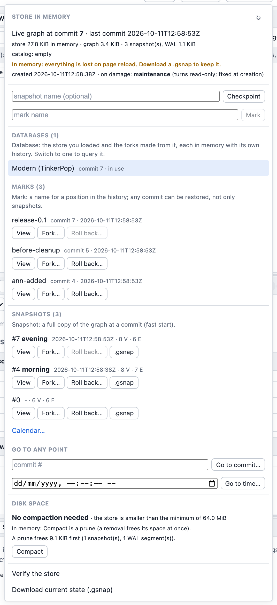
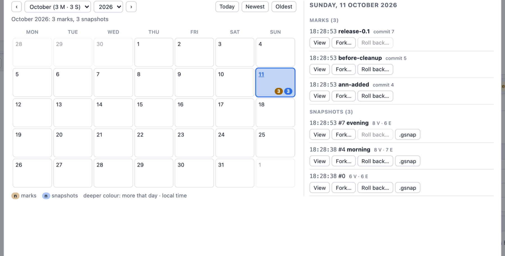

The Store in the Playground
The web playground runs the engine in the browser
(WebAssembly), where there is no disk to write to. It still gives every graph the full Store: a
MemDir store, with the same byte format as on disk.
Every graph you load (a sample, the empty graph, a file) is kept as a Store in memory: the loaded state is commit 0 (its first snapshot), every run that changes the graph adds a commit to the store's write-ahead log, and the Store menu in the top bar works on it exactly as the dev server's does on a store directory:
- the position (commit, time of the last commit) and the sizes: the store's bytes in memory next to the graph's own footprint;
- Checkpoint (a snapshot of the current state; one is also written automatically after 4 MiB of log since the last one) and Mark (a name for the current position);
- the marks and the snapshots (each with a
.gsnapdownload), the newest five of each; Calendar… (or See all… when there are more) opens the history calendar; - on every snapshot and mark, and through Go to commit / Go to time: Open read-only here (queries read that past state, writes are refused, a banner offers Back to the live graph), Fork into a new database and Roll back here (what comes after moves to the attic);
- the attic: Show changes (100 commits per page with Previous/Next, the totals over all of them; the dialog scrolls in both directions and has a full-screen toggle, Esc restores its size), Restore, Fork, Remove;
- Databases: the store you loaded and every fork made from it ("fork of Modern (TinkerPop) @ commit 12"), each a store in memory with its own history, with Switch to (the tabs' results may be stale afterwards) and Close (frees its memory);
- Disk space with Compact: in memory a compaction is a prune up to the current commit (the last two snapshots stay), which frees the memory old snapshots and WAL hold; the button is always enabled (not while another store action runs); when the compaction advice does not recommend it, it asks first, showing what it would free and why it is not recommended;
- Verify the store checks every checksum, and Download current state (.gsnap) saves the state on screen.
The menu after a few commits, three marks and three snapshots (the buttons View, Fork… and Roll back… are the three actions above):

Calendar… shows every mark and snapshot by day, with the same actions:

A running store action is shown in three places (the same on the dev server): its button switches to the running text in bold accent colour with a spinner and the elapsed time ("Verifying the store… 0:42"); the Store button in the top bar shows it while the menu is closed ("Store · verifying… 0:42"); and a toast gives the result at the end (a problem found, such as Verify's damage, has a Details button that opens the menu, where the last Verify's result is listed under its item). Meanwhile every other store action is disabled, its tooltip saying which one to wait for; screen readers hear the start and the end through a polite live region. The engine reports no progress for these actions and none of them can be cancelled: the elapsed time is all there is.
In memory: everything is lost on page reload. Download a .gsnap to keep a state (load it
back from the start page). The browser has no disk the playground writes to: syncs are no-ops,
and the byte format is the same as on disk, so a downloaded snapshot opens anywhere.
Stop (next to Run) restarts the engine: the graph is restored as it was last loaded or saved, and the store in memory starts over from that state (its history is lost).
To keep a history across reloads, run the same UI on a store on disk with the
dev server: graphersal --graph data/ --server.